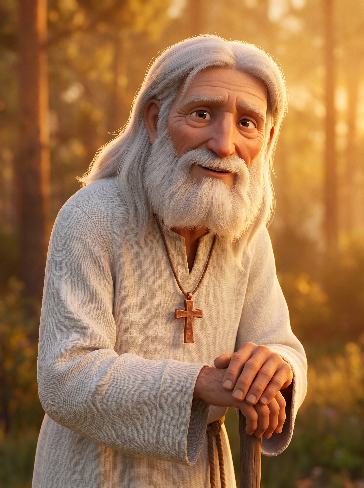
Кто держит историю
Серафим
Он смеялся. Это первое, что стирается в пересказах жития, и первое, что мы возвращаем. Не суровый подвижник, а человек, которому всё на свете любопытно и всех на свете жалко. Воюет он только с унынием.
Black Cobra представляет
По одноимённому роману Павла Тужилкина
Он упал с колокольни — и не разбился.
Теглайн
«Серафим» на древнееврейском значит «пламенный». Имя дали монаху в тридцать два года, по монастырскому обычаю, почти наугад. Оно оказалось точным описанием следующих сорока семи лет.
Логлайн
Курск, 1761 год. Семилетний сын купца срывается с лесов строящейся колокольни — и встаёт невредимым.
Дальше семьдесят восемь лет: лавка, где он отвешивает крупу и думает совсем не о ней; пеший переход в Киев; изба в саровском лесу; топор разбойников; тысяча ночей на камне; шестнадцать лет молчания. И очередь из тысяч людей у двери, которую в конце концов он открыл.
Синопсис
Человек, который всю жизнь уходил от людей, но оказался нужен им больше всех остальных.
Прохор Мошнин растёт в Курске, в доме, где пахнет крупой из лавки и воском из красного угла. Отец умер, когда мальчику не было семи. Мать, Агафья, достраивает за мужа каменный храм и таскает сына с собой на леса. Оттуда он и падает — с верхнего яруса, на битый кирпич. И поднимается. Городской юродивый Николка говорит матери: раз уберегли, значит, для чего-то приготовлен. Жди знамения.
Знамение приходит трижды. В десять лет, когда Прохор догорает в горячке и его подносят к иконе, случайно занесённой в дом крестным ходом от дождя. В семнадцать, когда он понимает про себя простую вещь: торговать он не сможет никогда. И в двадцать три, когда киевский затворник Досифей, впервые его увидев, называет по имени, которого не мог знать, и произносит одно слово — Саров.
Он уходит. Год послушания, потом второй, потом восьмой. Постриг. Новое имя — Серафим. Служба, свечи, тяжёлое золото облачений. И однажды посреди литургии — свет, после которого всё земное перестаёт весить хоть что-нибудь. Дар оказывается неподъёмным: он начинает видеть, что случится с людьми, и слышать то, о чём они молчат. С этим невозможно жить среди людей.
Шестнадцать лет в избе на берегу Саровки. Кормит медведя с руки. И война — не с медведем, с самим собой.
Однажды в лес приходят трое мужиков с топором: решили, что у монаха водятся деньги от богомольцев. Он не защищается — кладёт свой топор на землю и складывает руки на груди. Его находят к вечеру, еле живого. Он выкарабкается и останется согбенным до конца жизни. А потом добьётся, чтобы разбойников отпустили.
Дальше он уходит ещё дальше. Тысячу ночей стоит на камне в чаще. Замолкает — на годы. Запирается в келье и не отворяет даже приехавшему епископу.
А в 1815 году дверь открывается.
И к ней выстраивается очередь. Крестьяне, дворяне, купцы, генеральши, мальчишка-послушник, парализованный юноша, которого вносят на руках. Однажды ночью — двое офицеров на тройке, и один из них оказывается императором. Каждому вошедшему согбенный старик говорит разное, но встречает всех одинаково, словами:
«Радость моя»
Почему это кино
Мы рассказываем историю выбора, который человек делает заново каждые десять лет. И каждый раз — против себя.
Мальчик, которому снится, что он летает. Юноша за прилавком, мысленно уплывающий с Колумбом. Монах, удирающий от собственного дара. Старик, который наконец понимает, что дар был вообще не для него.
Финал здесь устроен красиво и очень по-киношному: герой всю дорогу уходит — в монастырь, в лес, на камень, в молчание, в запертую келью, — и в самой дальней точке своего бегства оборачивается и отпирает дверь.
Ради этого разговора и создаётся анимационный фильм.
Поэпизодный план
Курск, ночь. Мальчик разбегается по лугу, шагает пошире — и летит над крышами. Просыпается с ощущением, что тело всё ещё ничего не весит.
Мать берёт Прохора на стройку. Верхний ярус, гул, запах смолы. Он встаёт на оконную раму, раскидывает руки — и выпадает в проём. Мать сползает вниз на четвереньках. За храмом стоит живой мальчик и боится, что его отругают.
Николка Блаженный и Прохор. Мир глазами семилетнего: святые, мученики, Царствие Небесное — «светлое-светлое, ярче солнышка». Первая смена изобразительного регистра: рассказы юродивого показаны как ожившая иконная доска.
Весна, ручьи, промокшие сапоги. Горячка. Мальчик тонет в огненной спирали. В дом заносят икону, пережидая ливень. Его подносят приложиться — спираль гаснет, и вместо неё зелёный луг и белая фигура вдалеке.
Семнадцать лет. Прохор отсыпает крупу в мешочки, а видит паруса Колумба. Мать смотрит на него и понимает: купца не будет.
Библиотека Первышевых. Фотинья требует звать её «мадмуазель ФотИ», бранит Россию, хвалит заморские духи. Он спорит с ней о Ломоносове и не может отвести глаз. Её отец говорит без обиняков: не твоего полёта птица.
Отец Пётр берёт юношу с собой к умирающему купцу. Тот выгоняет родных и исповедуется при мальчике. Первый по-настоящему страшный эпизод фильма, и в нём нет ни одного чудовища.
Пеший переход через пол-России. Лавра, пещеры, мощи. Затворник Досифей называет Прохора по имени и произносит слово, вокруг которого построен весь фильм: Саров.
Мать надевает сыну на шею медный крест. Она отпускает его, зная, что видит в последний раз. Обоз уходит на север, где холмы, тёмный лес и низкие избы с бычьими пузырями вместо стёкол.
Саровская пустынь. Годы послушания, свёрнутые в один монтажный проход: дрова, псалтирь, тесто, снег, тесто, снег. Постриг. Настоятель произносит новое имя — Серафим. Пламенный.
Великий четверг. Литургия. Посреди возгласа храм заливает светом, и по воздуху, не касаясь пола, проходит Христос. Два часа Серафим стоит неподвижно. Кульминация первой половины фильма — без единого слова.
Изба на Саровке. Четыре сезона одним эпизодом. Медведь приходит за мёдом и остаётся. Лосиха берёт хлеб мягкими губами прямо с ладони. А по ночам накатывает память: белые курские сады, тёплые руки матери, смех Фотиньи, запах чужих духов через тридцать лет и восемьсот вёрст.
Трое крестьян приходят за деньгами, которых нет. Серафим опускает свой топор и складывает руки крестом. Сцена решена звуком и белым экраном, без единой капли крови. Он выживет согбенным. И потребует, чтобы разбойников отпустили: «Они не ведали, что творили».
Тысяча ночей на гранитном валуне. Здесь фильм позволяет себе самое большое — видения будущего: горящие храмы, расстрелянный царь, кости, вынутые из гроба и увезённые в мешке неизвестно куда. А следом леса на разрушенных стенах, золото на маковках и люди, возвращающиеся в церкви.
Он замолкает. Годы без единого слова. Приходящих встречает поклоном до земли — и они уходят ни с чем. Тишина, которая держится на одной музыке и стоит на своём.
Запертая дверь. Даже епископ уезжает ни с чем. Обоз с кремлёвскими сокровищами прячут в саровских пещерах; за окном идёт война, которую он видел на камне двенадцатью годами раньше.
Дверь открывается. Первые вошедшие плачут, сами не понимая почему. Слух расходится по России. Монастырская площадь забита так, что не пройти.
Юношу Мотовилова вносят на руках. Старик берёт его за руки, поднимает — и отпускает. Тот идёт вокруг сосны, спотыкаясь и плача. Толпа опускается на колени.
Зимний лес, двое сидят на поваленном дереве, и снег не тает у них на плечах. Старик объясняет молодому, что такое благодать, — и тот вдруг чувствует тепло и понимает, что оно идёт изнутри.
Последняя литургия. Он обходит все иконы, прощается с братией и выходит из алтаря северными дверями. Ночью, стоя перед «Умилением» — той самой иконой из курского дома, — он видит, как расходятся стены. Навстречу идут двое: Богородица и его мать. Мать зовёт его так, как никогда не звала при жизни: «Серафим!»

Кто держит историю
Он смеялся. Это первое, что стирается в пересказах жития, и первое, что мы возвращаем. Не суровый подвижник, а человек, которому всё на свете любопытно и всех на свете жалко. Воюет он только с унынием.
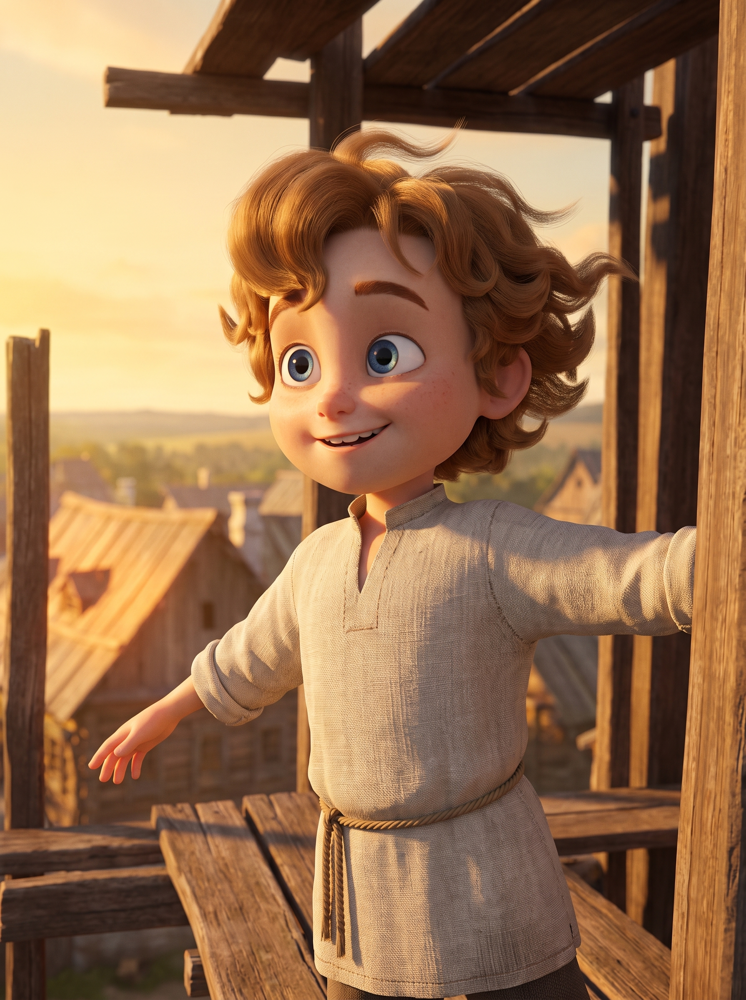
Кто держит историю
Тоненький, голубоглазый, вечно где-то в облаках. С него начинается фильм, и его глазами он заканчивается.
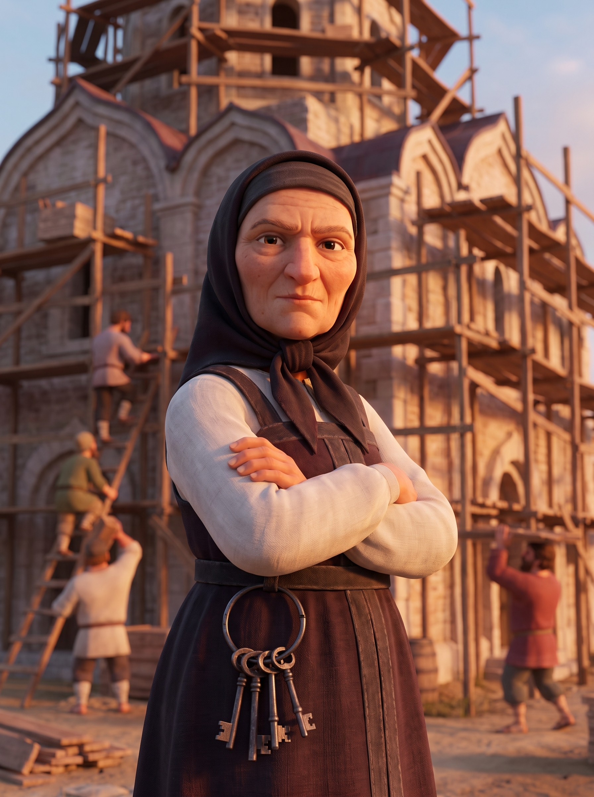
Кто держит историю
Мать. Вдова, которая доводит до конца мужнин обет и распекает бригадиров так, что те работают вдвое быстрее. Даёт себе волю ровно один раз — когда отпускает сына навсегда.
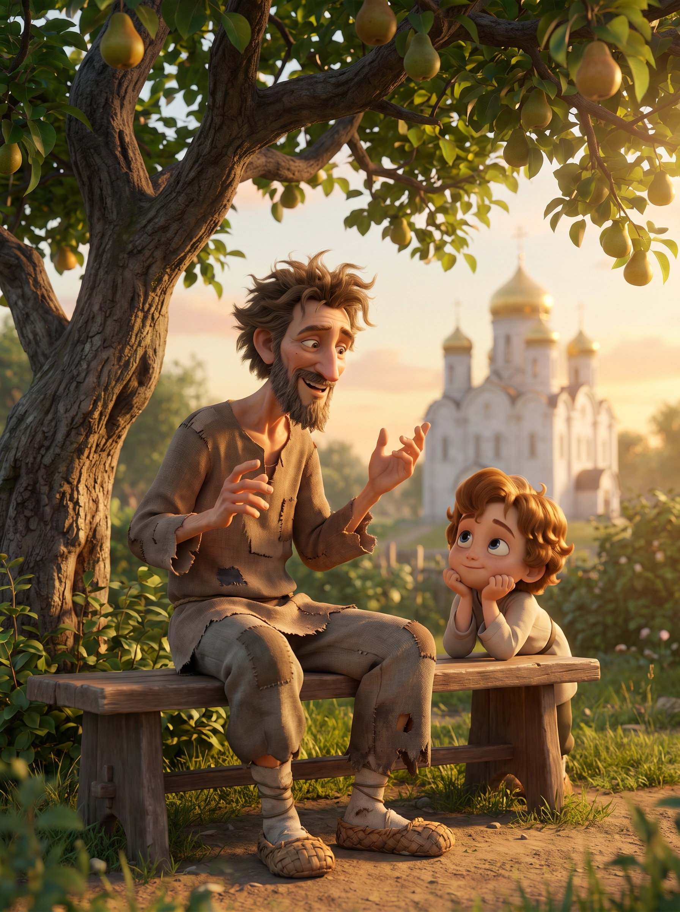
Кто держит историю
Юродивый. Реденькая борода, драные лапти, тысяча прибауток и полное бесстрашие перед купцами. Смешит зал первые двадцать минут — и вставляет фразу, с которой начинается вся история.
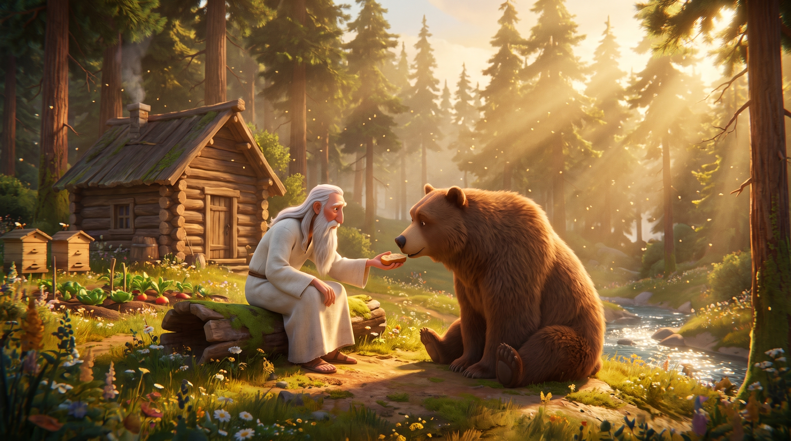
Тот, ради кого придут дети
Он не разговаривает и не думает по-человечески. Просто повадился на пасеку за мёдом, а потом стал приходить уже непонятно зачем. Пугает богомольцев, даёт себя гладить и уходит в чащу, когда его просят.
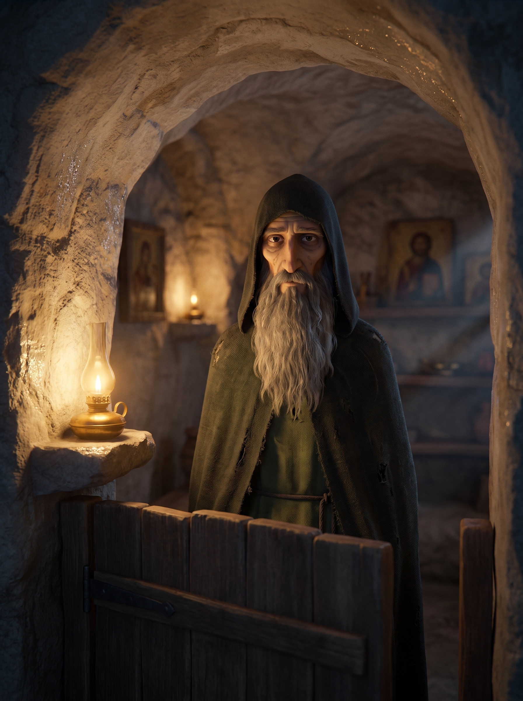
Те, кто разворачивает судьбу
Киевский затворник. Появляется на пять минут, называет незнакомого парня по имени и отправляет его туда, где тот проживёт остаток жизни.
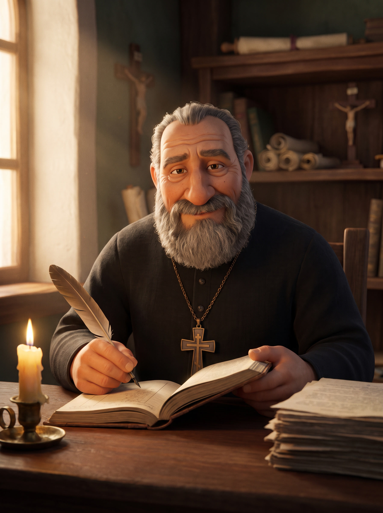
Те, кто разворачивает судьбу
Настоятель Сарова и земляк. Хитрит с бумагами, лишь бы не отдавать любимого монаха в другой монастырь. Его смерть — та точка, после которой герой уходит в лес.
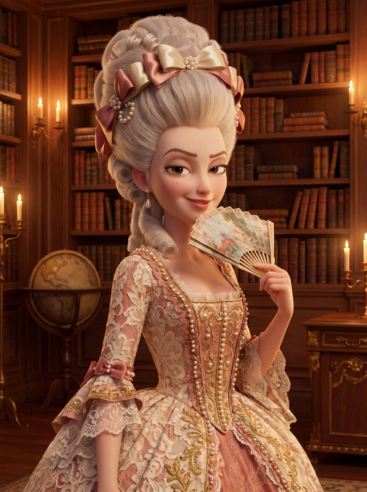
Те, кто разворачивает судьбу
«Мадмуазель ФотИ». Жемчуга, французский учитель, мечта уехать и папенькино решение выдать её за нелюбимого. Герой больше никогда её не увидит — и будет вспоминать в лесу тридцать лет спустя.
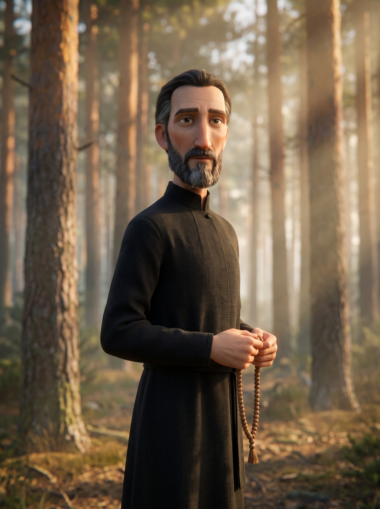
Те, кто разворачивает судьбу
Друг с послушнических лет, будущий Марк-молчальник. Идёт тем же путём на полшага впереди и замолкает раньше. С ним герой в последний раз разговаривает по-настоящему.
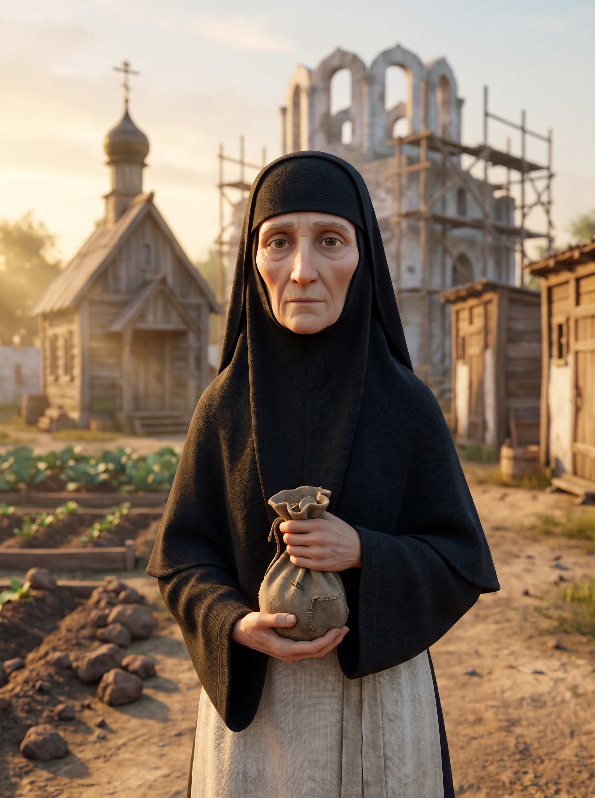
Фон, без которого не читается время
Барыня, которая раздала имение и основала Дивеевскую обитель. Умирая, оставляет герою поручение — и он будет исполнять его сорок пять лет.
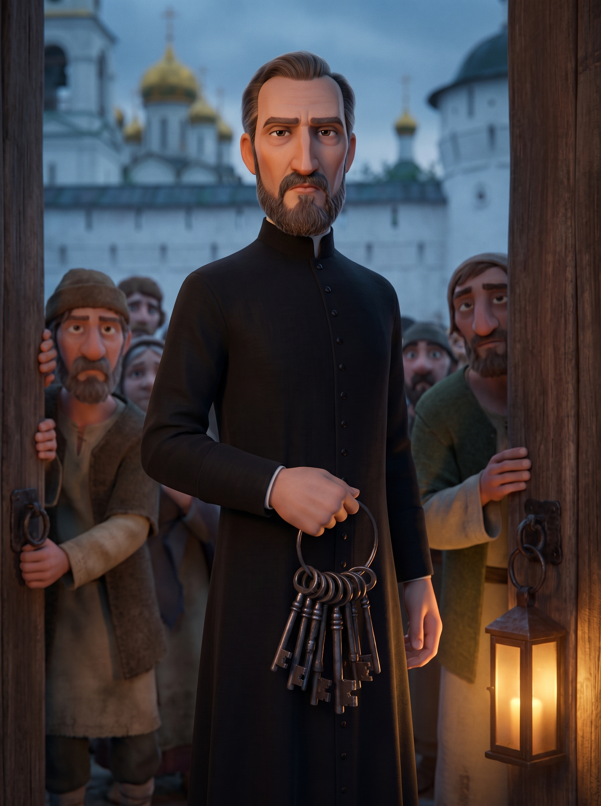
Фон, без которого не читается время
Настоятель, которому не хватает злодейства даже на самую малость. Он просто хочет запирать ворота вовремя, а из-за паломников не выходит.
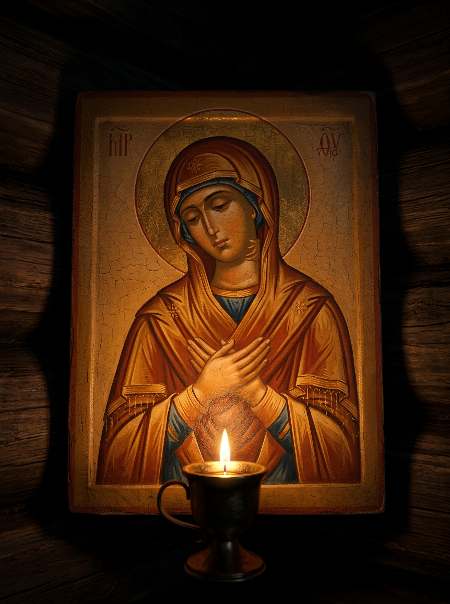
Фон, без которого не читается время
Написана на холсте, дана матерью в дорогу. Проходит через весь фильм молча и оказывается в самом последнем кадре.
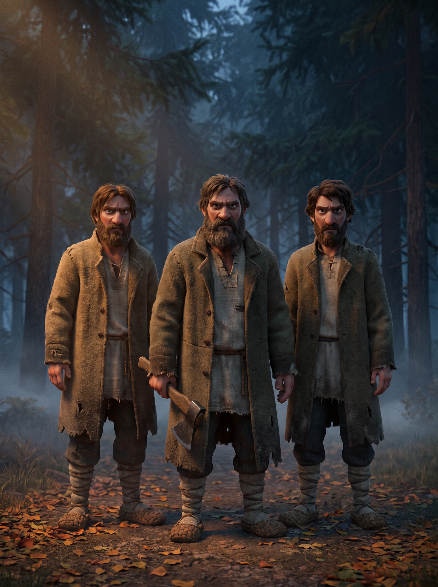
Фон, без которого не читается время
Отец и двое сыновей из соседнего села. Приходят в лес за чужими деньгами, уходят убийцами — и получают прощение от того, кого убивали.
Мир фильма
01 · Исток
Купеческий город, утонувший в цветущих садах. Между домами по пятнадцать саженей огородов, над липами кружат галки, посреди улицы растёт каменный храм. Тепло, тесно, обжито.
02 · Переход
Пол-России пешком и в обозе. Цветущий юг сменяется севером, где лес стоит стеной, деревни наполовину пусты после пугачёвщины, а на постоялых дворах не открывают окон, чтобы не упустить тепло.
03 · Устав
Монастырь на горе над Саровкой, под ним многоуровневые пещеры, выдолбленные в доломите. Всё общее: трапеза, одежда, работа. Утреня в пять, повечерие ближе к полуночи.
04 · Испытание
Пятистенная изба на холме, речка под откосом, родник, пасека, огород. Здесь проходит сорок минут экранного времени и вся внутренняя война фильма.
05 · Предел
Гранитный валун с плоской вершиной в лесной чаще. Снега на нём нет, будто кто-то смёл его веником. Герой знал этот лес вдоль и поперёк — и никогда раньше этого камня не видел.
06 · Долг
Обитель, которую он опекает всю жизнь и куда после 1787 года не приедет ни разу. Она входит в фильм через сестёр, что идут к нему пешком за двенадцать вёрст.
Визуальный язык
Прямой референс — «Царь царей» (Республика Корея, 2025): тёплый кинематографичный CG, где главную работу делает свет, а материалы остаются осязаемыми. Дерево пахнет деревом, снег скрипит, ткань тяжёлая. Никакого гладкого пластика.
Картинка живёт в трёх регистрах, и переключаем мы их только там, где меняется сам герой. Это не просто оформление, а задуманный драматургический ход.
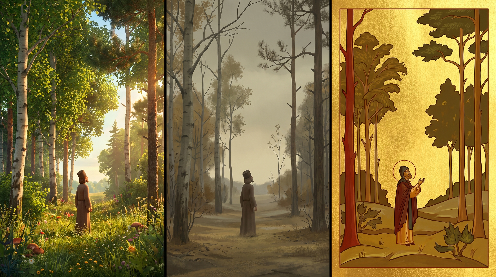
Звук. Знаменный распев и мужской хор — точечно, а не сплошным ковром. Голос самого героя ведёт виолончель: она вступает там, где он молчит, и уходит, когда он начинает говорить. Низкая, тёплая, с живым дыханием смычка, ближе к человеческому голосу, чем к оркестру. Всё остальное озвучивает сама натура: топор, вода, шаги по насту, пчёлы. В главе о молчальничестве тишина работает наравне с музыкой.
Референсы
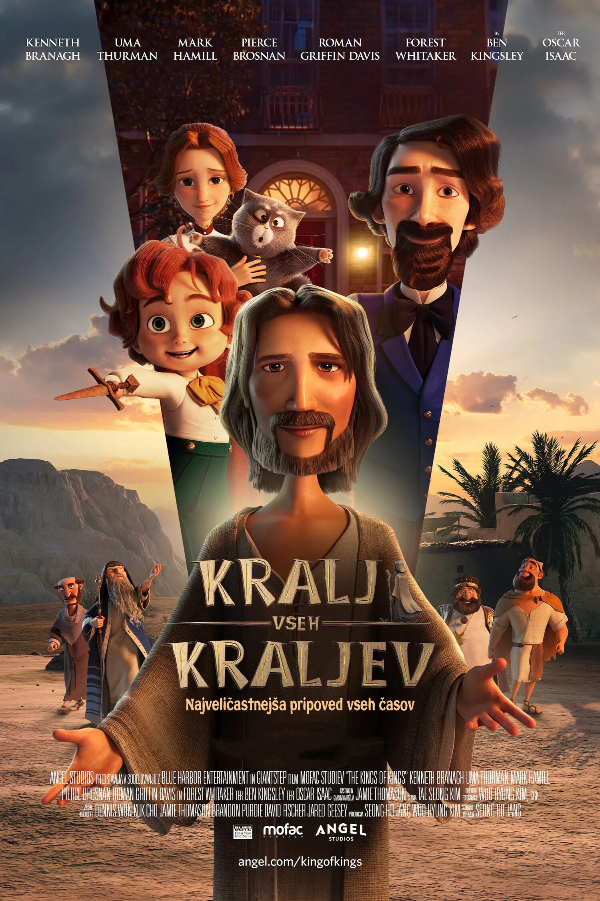
Республика Корея, 2025. Прямой референс: как рассказать древний сюжет средствами тёплого CG и не свалиться ни в мультик, ни в иллюстрацию к учебнику.
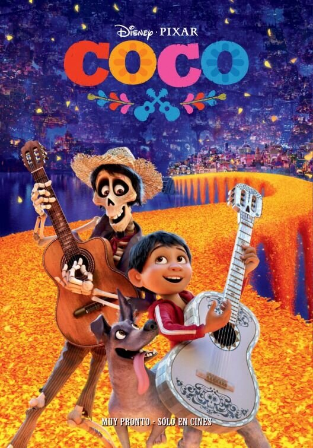
Доказательство, что семейная анимация может всерьёз говорить о смерти и памяти — и собирать при этом залы по всему миру.
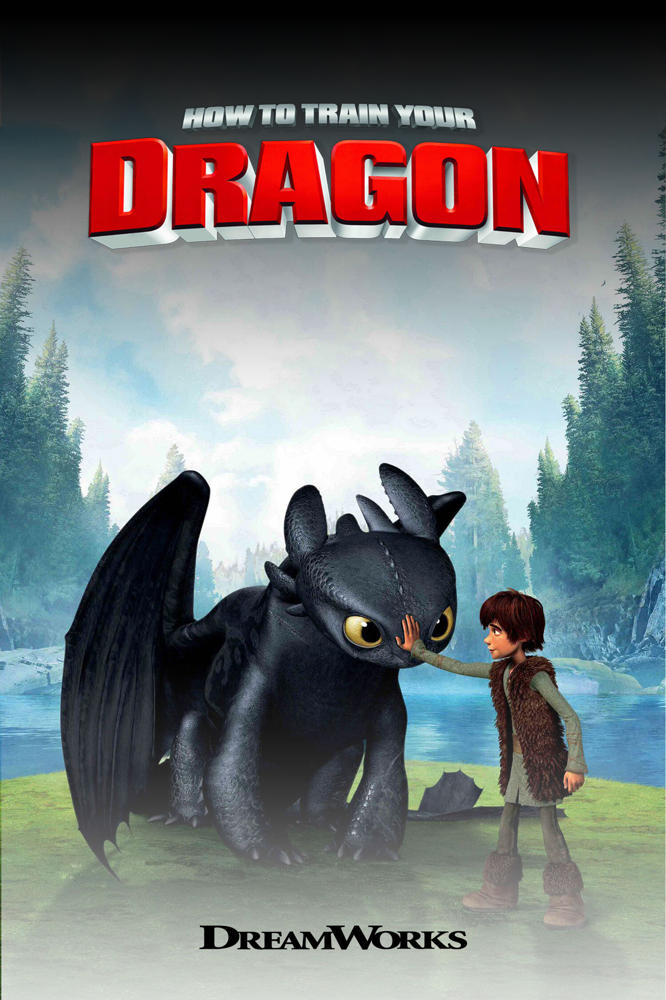
Ориентир по пейзажу и по тому, как большое пространство само по себе становится чувством. Нам это нужно уже в первом кадре.
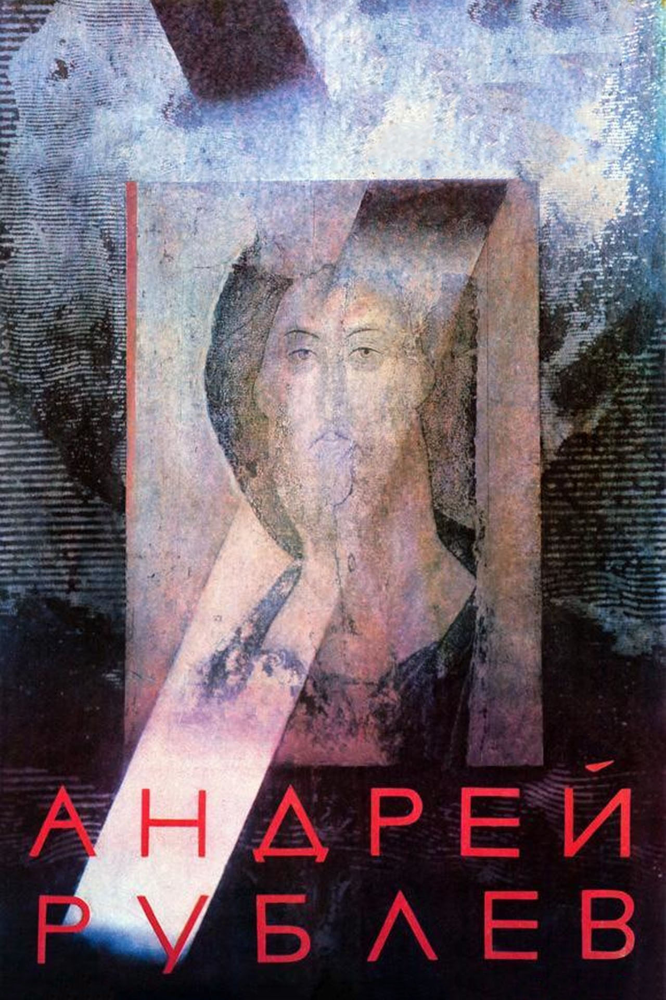
Смысловой, а не визуальный ориентир. Святость там показана через грязь, тяжёлую работу и сомнение — единственный честный способ.
Слова создателей
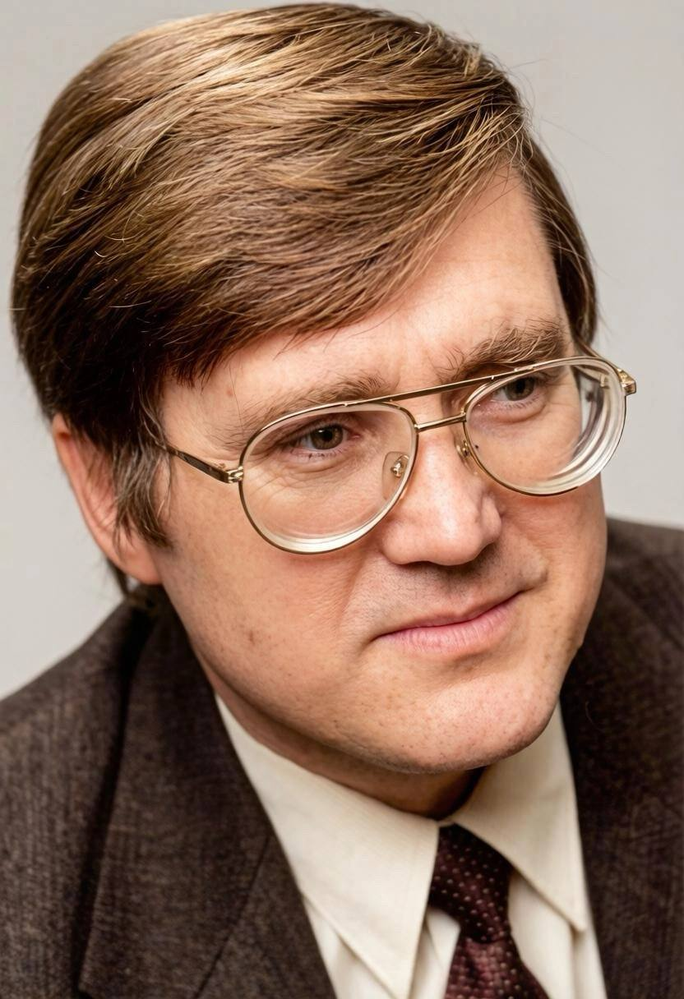
Автор книги
«Пламенный» — роман-предположение. Я не брался за реконструкцию: в основе лежат сказания о преподобном и записи тех, кто знал его при жизни, а остальное — попытка понять, что чувствовал человек, проживший такую жизнь.
Мне было важно, чтобы Прохор Мошнин оставался в книге живым мальчиком, а не иконой с первой страницы. Чтобы он боялся, ошибался, влюблялся и смеялся. Святость, к которой он пришёл, стоит дороже, если видно, из чего она выросла.
Кино может сделать то, чего не может книга: показать этот путь глазами. Я рад, что за него взялись люди, которые читали не по диагонали.
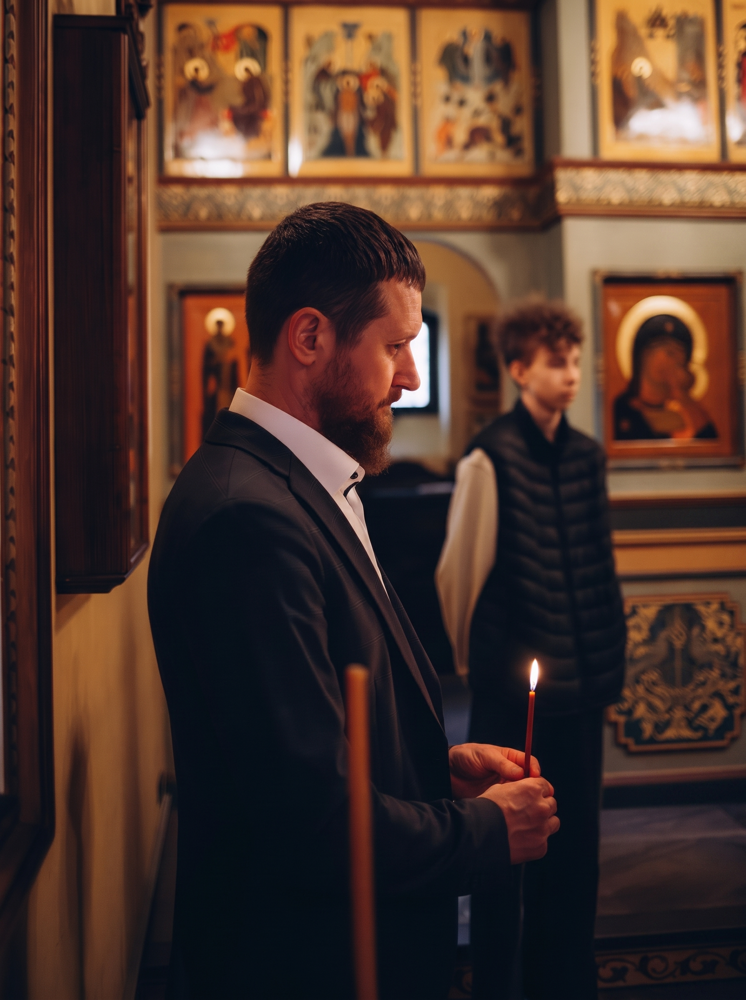
Автор идеи
«Стяжи дух мирен, и вокруг тебя спасутся тысячи.»
Я думаю, что экранизация романа приблизит образ Преподобного к нашим современникам, поможет воспринимать его не только как великого православного святого, но и как живого человека – мальчика Прохора из Курска, целеустремленного юношу и, наконец, монаха, который шаг за шагом искал свой путь к Богу.
Зритель вместе с героем пройдет его путь – через детские испытания, болезни, монастырские труды, одиночество, долгие молитвы и годы духовного становления. Для верующего зрителя фильм может стать поводом, чтобы вновь обратиться к духовным наставлениям Серафима Саровского, а для тех, кто ищет свой путь, – историей о внутренней силе, надежде и смысле жизни.
Надеюсь, что фильм даст стимул к изучению биографии и наследия православного святого Серафима Саровского, повысит интерес к духовной жизни.
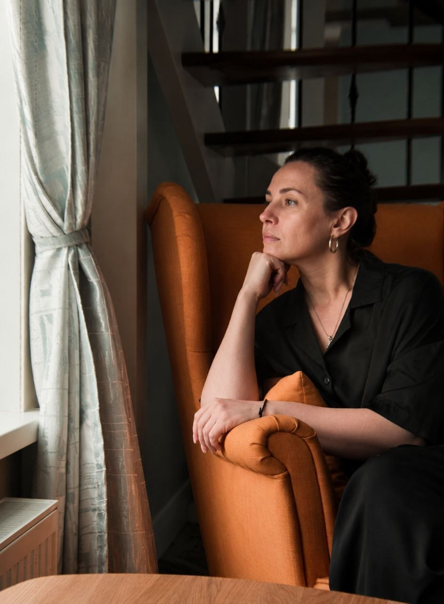
Генеральный продюсер
«Добро, смирение и любовь не имеют срока давности.»
Пишу своё слово как продюсер, стоящий у истоков проекта, который, я глубоко убеждена, станет не просто культурным событием, но и подлинным духовным явлением. Мы задумываем создание анимационного, а затем и полнометражного игрового фильма — экранизации уникального романа-предположения Павла Владимировича Тужилкина «Пламенный», повествующего о житии великого русского святого, преподобного Серафима Саровского.
Анимационный фильм — это волшебный мост к детским сердцам. Он позволит нам, используя визуальную метафору, сказочность и глубокую символику, донести до самых юных зрителей красоту и глубину жития Серафима. Дети увидят в нём не просто святого с иконы, а доброго волшебника, мудрого друга, героя, который совершает подвиг не силой оружия, а силой любви.
Мне хочется, чтобы наши фильмы стали искрой, которая зажжёт в сердцах детей и взрослых — по всей России, в Европе и Америке, в ныне живущих и во всех будущих поколениях — жажду познания, стремление к истине, желание быть лучше, добрее и человечнее.
Я верю, что язык кино — самый мощный и доступный язык для трансляции идей и ценностей. И если мы сможем рассказать историю преподобного Серафима так, чтобы она отозвалась в душах миллионов, мы подарим миру нечто бесценное: свидетельство того, что добро, смирение и любовь не имеют срока давности и способны преображать сердца человеческие в любые времена.
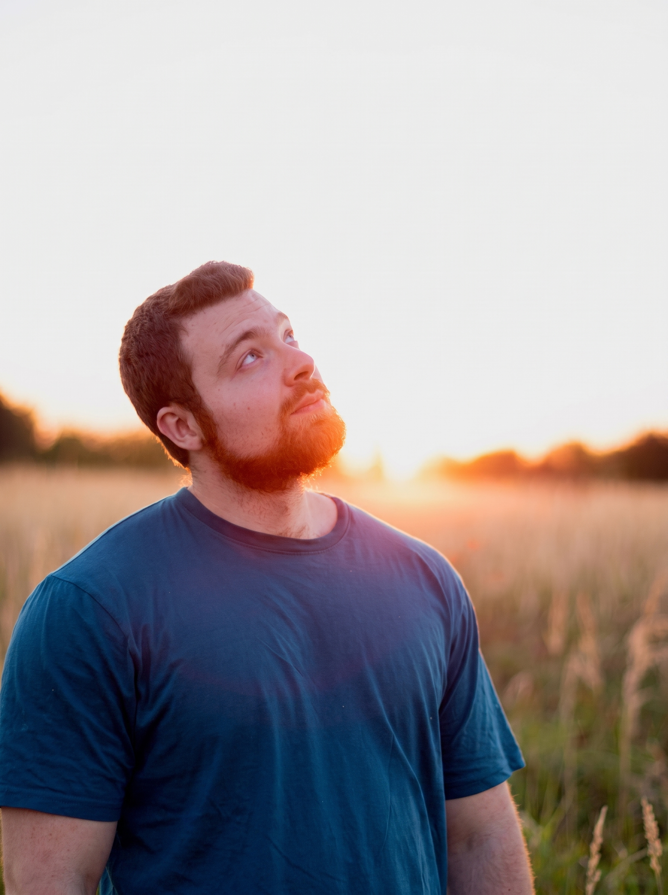
Режиссёр
«Как могу я учить других, коли сам грешен и слаб?»
Меня в этой истории держит одна деталь. Мальчик падает с высоты собора, встаёт живым — и первое, что говорит: «Мам, я нечаянно. Я больше не буду». Он боится, что его отругают.
Из этого вырастает всё остальное. Человек, которого потом назовут великим святым, всю жизнь боялся оказаться недостаточно хорошим. Он уходил всё дальше — в монастырь, в лес, на камень, в молчание — не потому что презирал людей, а потому что не считал себя вправе кого-то учить, пока сам не разберётся.
А потом дверь открылась, и он сорок минут экранного времени говорит каждому вошедшему: радость моя.
Я хочу сделать анимационный фильм, который смотрится без единого знания о православии. Про мальчика, который хотел летать. Про мать, которая отпустила. Про человека, который семьдесят лет искал ответ на вопрос «зачем я живу» — и нашёл его не внутри себя, а в чужом лице напротив.
Кому нужен этот фильм
Семейное кино, рассчитанное как на детей, так и на взрослых. В фильме ведутся разговоры о жизни и смерти, но ребенок увидит в этом фильме доброе приключение, а взрослый — историю про то, как перестать доказывать миру, что ты чего-то стоишь.
Ниша серьёзной авторской полнометражки для семейного зрителя в русской анимации почти пуста. Сказочные франшизы заняли всё поле, а место для фильма, который берёт фестивали и при этом собирает зал, так и стоит свободным. Фильм выйдет в международный прокат
Аудитория у материала есть до всякой рекламы: Серафим Саровский — один из двух самых почитаемых русских святых, к его мощам каждый год едут сотни тысяч человек. И у фильма есть жизнь после проката: образовательные показы, лицензирование, артбук, продолжение.
Курск, Саров, Дивеево, Арзамас, Муром, Киев. Фильм собирает карту, по которой люди и так ездят, и даёт этой карте лицо.
Потенциал развития
В романе пятнадцать глав. Структура раскладывается на восемь-десять серий по двадцать две минуты художественного сериала.
«Пламенный» может открыть серию русских житий, снятых как большое авторское кино.
Иллюстрированный роман с кадрами, раскадровками и разработками персонажей.
Фильм плюс методические материалы. Учителю литературы и истории такого материала сейчас взять негде.
Курск — Саров — Дивеево существует как направление уже двести лет. Фильм даёт ему визуальный образ и приводит нового человека.
Анимация даёт миру «Пламенного» лицо и находит ему зрителя. Дальше та же история может быть рассказана заново — живыми актёрами, крупными планами, дыханием в кадре. Первый фильм при этом остаётся не эскизом, а полноценной работой, на которую опирается вторая.
Стратегия производства
Мы предлагаем двухэтапную стратегию. Она создаёт прочный фундамент для всего проекта: сначала мир, потом люди в нём.
Ближайший этап
Следующий этап
Дополнительные шаги
Дополнительный тираж выходит не вслед за фильмом, а вместе с ним. Книга становится самостоятельным событием и приводит к проекту тех, кто читает раньше, чем смотрит.
Мы открыты к сотрудничеству с духовенством, чтобы сохранить чистоту и глубину замысла. Материал требует точности, которую нельзя добыть одним чтением источников.
Инвесторам и партнёрам
Проект в разработке. Мы открыты к соинвестированию, копродукции и партнёрству — от участия в производстве до поддержки отдельных направлений: музыки, дистрибуции, издательской и образовательной программы.